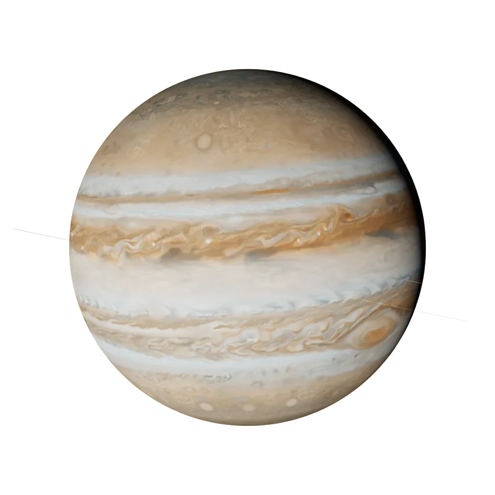

Sign guide · Fire · Mutable
Sagittarius
November 22 – December 21
“I seek”
- Element
- Fire
- Modality
- Mutable
- Ruler
- Jupiter
- Symbol
- The Archer
Sagittarius in today’s sky
Calculated from today’s sky with the same planet model as the 3D Observatory. Not a live feed.
Today’s Sagittarius reading is calculated in your browser from real planetary positions. If this text remains, turn on JavaScript to see it, or read the full Sagittarius guide below.
About Sagittarius
Sagittarius is the zodiac's arrow aimed at the horizon — ruled by Jupiter, the largest planet, and built to the same scale. This is the sign of the explorer and the philosopher: hungry for distance, meaning, and the next thing it doesn't yet understand. Sagittarian honesty is famous, its optimism contagious, and its suitcase always half-packed.
The astronomy of Sagittarius
The factual layer: where Sagittarius sits on the ecliptic.
Element, ruler, ecliptic band
the element of drive and spark — fire signs move on instinct, warmth and action.
the adapting mode — mutable signs flex, blend and prepare the way for change.

Jupiter, the planet of expansion, meaning and the wide horizon.
Jupiter · our engine render
Sagittarius is the 240°–270° band of the zodiac circle. The Sun crosses it around 22 Nov – 21 Dec each year. The exact day shifts by about a day from year to year, which is why the dates are approximate.
Sagittarius in your chart
Most people meet Sagittarius as a “star sign”. In a real birth chart it can appear in three very different places, and each one means something distinct.
Sun in Sagittarius
Your core self: the “Sagittarius side” people mean when they ask your sign. It shapes your basic character and what makes you feel most yourself.
Moon in Sagittarius
Your inner, emotional world: how you feel, comfort yourself and respond in private. Two people with a Sagittarius Moon share an emotional language, whatever their Sun sign.
Rising (Ascendant) in Sagittarius
How you meet the world: your outward style and first impression. Your Rising is set by the exact time and place you were born, so it needs your birth time to know.
Sagittarius strengths & challenges
Strengths
- Optimism with evidence or without
- Honesty (whether requested or not)
- A genuine philosophical mind
- Courage to leap before the net appears
Challenges
- Tactlessness in the name of truth
- Commitment-shyness — to plans, places, people
- Promising more than a calendar can hold
- Restlessness that mistakes motion for progress
In life
Love
Sagittarius needs a co-adventurer, not a keeper. This sign loves with enthusiasm and humour and absolute candour — and bolts at the first scent of a cage. The partner who keeps a Sagittarius is the one who never tries to: shared freedom, shared journeys, and a home that feels like a base camp, not a terminus.
Traditionally a good match with Aries, Leo and Aquarius. See two-chart compatibility: Sun signs alone are not the whole story.
Career, friendship, shadow, growth
Career
Sagittarius thrives at scale and at distance: travel, academia, publishing, law, international anything, outdoor work. Small rooms and small thinking suffocate this sign. The ideal role involves the big picture, frequent novelty, and a horizon that keeps receding.
Friendship
A Sagittarius friend is the one who texts "let's just go" and means it. This sign brings adventure, big laughter, and a refreshing honesty — it will tell you what it really thinks, then take you somewhere you have never been. Generous and endlessly optimistic, a Sagittarius lifts the whole group's mood. It values its freedom, so it won't smother you, but the friend who matches its appetite for the new and the true earns a companion for every journey ahead.
Shadow
The Sagittarius shadow is the runner — the part that calls flight freedom, leaves before things get real, and uses "honesty" as licence for tactlessness. Big promises outpace any calendar; the next horizon becomes an excuse to abandon the present one; the search for meaning never lands anywhere long enough to find it. The growth edge is commitment: discovering that depth is its own kind of adventure, and that staying can take more courage than leaving.
Growth
The inner path for Sagittarius is from seeking to finding — learning that the meaning it chases across continents was always available in the willingness to stay and go deep. This sign grows by keeping its word, by turning restless motion into a real direction, and by tempering its blunt truths with kindness. When Sagittarius plants its arrow rather than forever drawing the bow, the wanderer becomes the wise teacher.
Sagittarius reference
Dates, ruler, FAQ
Sagittarius at a glance
- Symbol
- The Archer
- Dates
- November 22 – December 21
- Element
- Fire
- Modality
- Mutable
- Ruling planet
- Jupiter
- Polarity
- Masculine / Yang
- Body part
- The hips and thighs
- Tarot
- Temperance
- Keyword
- “I seek”
Frequently asked
What are the Sagittarius zodiac dates?
Sagittarius season runs November 22 – December 21. People born in this window have their Sun in Sagittarius.
What element and ruling planet is Sagittarius?
Sagittarius is a Fire sign of the Mutable modality, ruled by Jupiter. Its symbol is The Archer.
Which signs are most compatible with Sagittarius?
Sagittarius is traditionally most compatible with Aries, Leo, Aquarius. Full synastry depends on the complete birth charts of both people, not Sun signs alone.
What are the main Sagittarius personality traits?
Sagittarius is known for being optimism with evidence or without, honesty (whether requested or not), a genuine philosophical mind. Its growth edges include tactlessness in the name of truth and commitment-shyness — to plans, places, people. As a Mutable Fire sign ruled by Jupiter, Sagittarius carries the keyword “I seek”.
Is Sagittarius rare?
No zodiac sign is truly rare: every sign covers about a month, so each accounts for roughly one twelfth of birthdays. Small global birth-rate variations by season make some signs marginally more common than others, but Sagittarius is no rarer than any other Sun sign. Your full birth chart, however, is genuinely one of a kind.
What is the Sagittarius symbol and ruling body?
The symbol of Sagittarius is The Archer, and it is ruled by Jupiter. Its polarity is masculine / yang, it is traditionally associated with the hips and thighs, and its corresponding tarot card is Temperance.
Every sign
Tap a tile to open that sign’s guide and today’s sky.